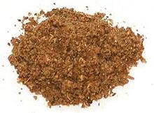

 |
Garam Masala - CKPIndia - Maharashtra | ||||
| Makes: Effort: Sched: DoAhead: |
6oz ** 25 min Yes |
A Masala from the Kayastha Prabhu (CKP) people of Maharashtria, on the central west coast of India - most used with meats, but also bean & lentil dishes (see Comments). | |||
|
------ 1/2 1/3 1/2 1 1/2 1/2 ------ 1 1/2 15 2/3 1 1/4 1 |
--- t t T T t T --- T t t t |
-- Toasted Black Cumin seed (1) Coriander seed Poppy seed (2) Fennel seeds Black Cardamom (3) Nag Kesar (4) ------------ Sichuan Peppercorns (5) Black peppercorns Cloves Cinnamon (6) blade Mace Nutmeg Star Anise |
Make: - (25 min)
|